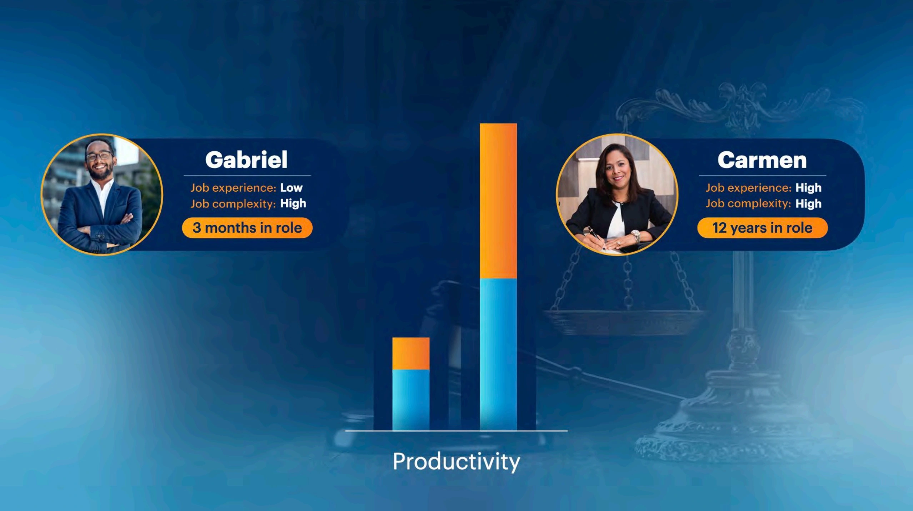
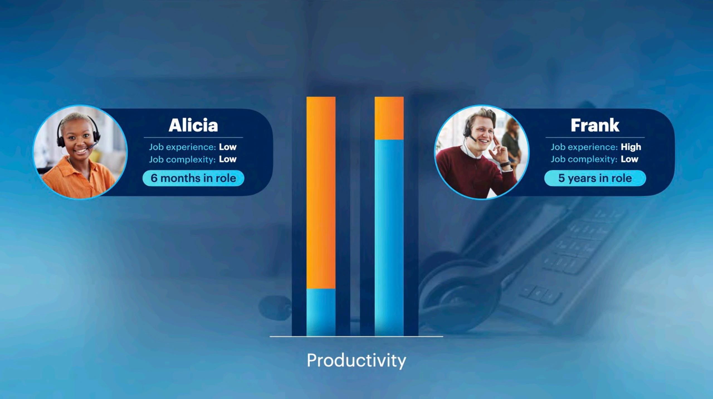
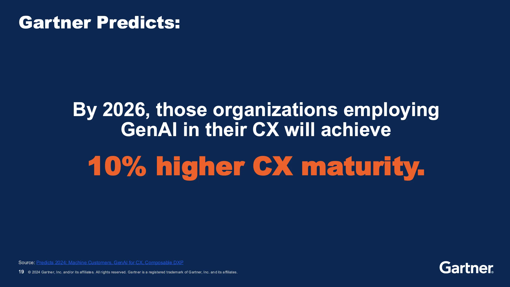
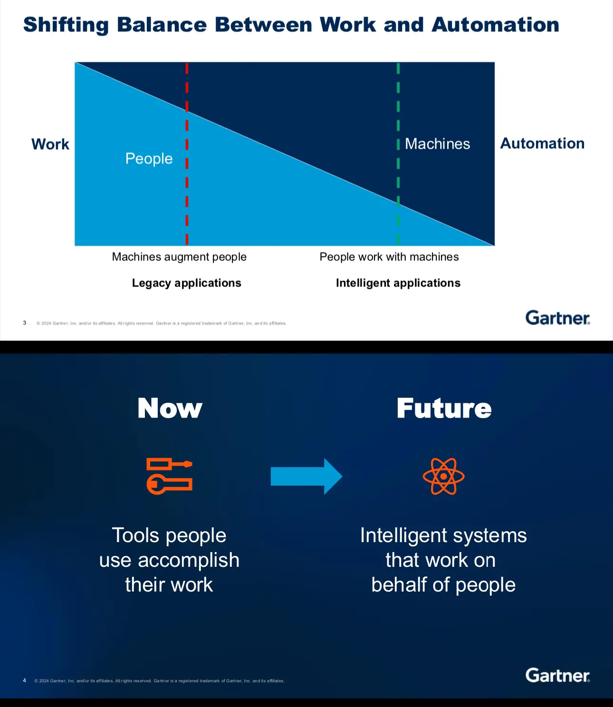
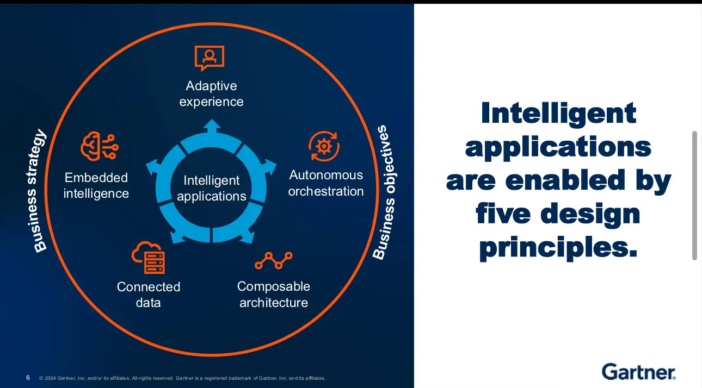

Today was all about diving into the opportunities AI presents, both for customer experiences and internal applications. I attended five talks, but let’s be real, one didn’t quite land for me. Still, the overall message from the day was crystal clear: AI is transforming how we work, think, and build—if we embrace it.
The day kicked off with the keynote Pacing Yourself in the AI Races by Hung LeHong and Mary Mesaglio, where they talked about two AI races: the frenzied pace of technology vendors and the steady race organizations must run to deliver AI outcomes. The key takeaway? We get to set our pace, whether that’s steady or accelerated. They introduced the idea of focusing on “deep productivity zones,” where AI can supercharge certain roles, especially those with high complexity and experience. It made me think about how we can be more strategic in applying AI to our teams—empowering both seasoned leaders and newer members.
Next, The Future of Enterprise Applications by Anne Thomas took a broader look at how AI is reshaping enterprise systems. The shift from human work to machine work was a big point here, with AI taking on more of the mundane tasks and letting humans focus on what we do best. I loved how she broke it down into five design principles for intelligent applications—adaptive experiences, autonomous orchestration, connected data, and more. Her vision of a future where our systems work more proactively felt tangible and inspiring.
Key Trends Driving Customer Experience in 2025 by Michael Chiu really got me thinking about simplicity in user experience. His story about Apple’s one-button phone versus the complexity of a Blackberry hit home. Sometimes, improving user experience means subtracting rather than adding features—a reminder that less is often more. He also emphasized the opportunities AI presents in customer-facing products, driving personalization and even new types of customers (think machines ordering for you).
Revenge of the Tipping Point by Malcolm Gladwell was a thought-provoking talk on how we interpret data. Gladwell’s key message was that we need to pay attention to outliers—those rare events or people who disproportionately affect outcomes. Whether it’s COVID superspreaders or a small number of polluting cars, Gladwell argues that focusing on averages can mislead us. It was a great reminder that not everything follows the bell curve—and that leaders need to understand the power of outliers when making decisions.
Lastly, I left the day with a lot of excitement. There’s so much potential for AI to not just enhance productivity but truly change how we work and engage with technology. I’m energized to encourage others to experiment more with AI and find ways to integrate it into future applications. AI isn’t just for the tech-savvy—it’s for all of us. Leaders have a real responsibility to set the tone and encourage healthy AI adoption across our teams.
Pacing Yourself in the AI Races - Opening Keynote
Hung LeHong & Mary Mesaglio
Key Takeaways:
- Two AI Races: There’s the rapid tech vendor race and the internal race to safely scale AI. The latter is about organizations finding the pace that fits their goals—whether steady or fast-tracked.  
- AI and Productivity: AI has the power to supercharge productivity, but this gain isn’t equally distributed. More experienced employees and those in complex roles tend to see the biggest boost.
- Sweet Spot for AI Productivity: There’s a “deep productivity zone” where AI can have the greatest impact. Leaders should focus on these zones to maximize AI benefits.

- Tech Sandwich: Forget the traditional tech stack—AI is coming from all directions. Organizations will need a “tech sandwich” approach, blending AI from embedded systems, BYO AI, and in-house builds.
- Managing AI Costs: Gen AI costs can quickly spiral out of control. Leaders need to keep a close eye on their AI expenses, especially during proof-of-concept phases.
- Trust and Security: As AI becomes integral to operations, trust and security are paramount. Trism technologies (trust, risk, and security management) will be critical to scaling AI safely.
- Behavioral Impact of AI: AI’s ability to level the playing field can cause tension between experienced employees and those catching up faster with AI. Leaders need to address these shifts to ensure a healthy workplace dynamic.
Key Trends Driving Customer Experience in 2025
Michael Chiu

Key Takeaways:
- Simplicity is Key: Customers want easy experiences. The one-button iPhone vs. Blackberry was a great example of how simplifying can be more powerful than overloading features.
- Subtract to Improve: Improving customer experience often means removing features rather than adding them. The Minus Mindset is all about creating streamlined, intuitive experiences.
- Paradox of Choice: Offering too many options can overwhelm customers, resulting in fewer decisions. Simplifying choices can help customers engage more effectively.
- Unlearning to Innovate: Sometimes we need to unlearn old approaches to make room for better solutions. This applies heavily to improving UX. 
Read more:
Future of enterprise applications
Anne Thomas
Key Takeaways:

- Shift in Work Balance with AI: AI is taking over mundane tasks, allowing people to focus on higher-value work. This will transform enterprise systems into intelligent applications.

- Five Design Principles for Intelligent Applications:
- Adaptive Experience: Personalized systems that anticipate user needs.
- Embedded Intelligence: AI understands and anticipates tasks across systems.
- Autonomous Orchestration: AI automates both simple and complex workflows.
- Connected Data: Aggregating metadata into a data fabric for smarter decision-making.
- Composable Architecture: Modular, API-first systems that offer flexibility and scalability.

Revenge of the Tipping Point
Malcolm Gladwell
Key Takeaways:
- Outliers Rule: Gladwell’s main point was that we often focus too much on averages when in reality, outliers can have an outsized impact on outcomes. Whether it’s a COVID-19 superspreader or the few cars responsible for most pollution, outliers drive many societal issues.
- Radical Distributions: Instead of following a bell curve, many problems have radically asymmetrical distributions, where a small percentage accounts for the majority of the effects. Leaders need to look for these outliers and address them instead of assuming problems are evenly distributed.
- Implications for Decision-Making: For leaders, especially in tech and business, this means rethinking how we look at data. Focusing on the middle can cause us to miss critical insights at the edges.
Overall Reflection
The recurring theme throughout the day was the transformative power of AI—both in boosting productivity and in shaping the future of applications. It was clear that AI has a role for everyone, whether they’re experienced leaders or new employees, and it’s up to us as leaders to set the standard for its adoption. I’m leaving today with a renewed focus on integrating AI into future projects and an eagerness to encourage my team to do the same. We’re at the start of something transformative, and I’m ready to run my race.